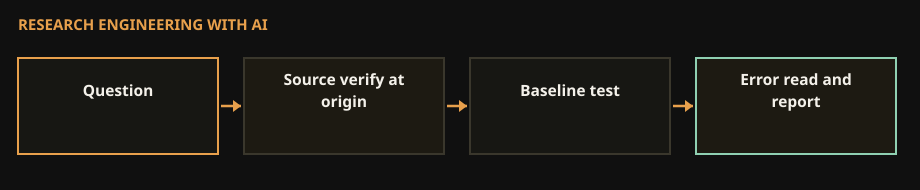
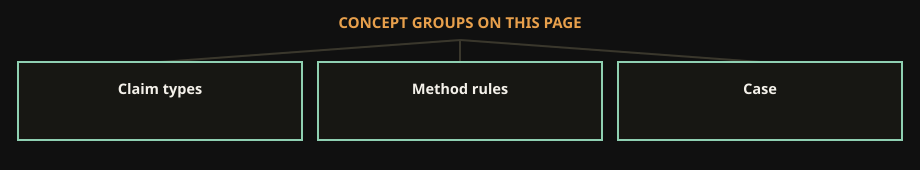

Research engineering with AI
AI speeds search, synthesis and test runs. Validity comes from design: baselines, controls, provenance and error reads.

Pipeline
Question -> Paper and source search -> Verify each source at origin -> Map claims and rival views -> Design a test with a baseline -> Run with logs -> Error read -> Report with claim types split
Claim types, keep split in each report
| Type | Meaning | Site sample |
|---|---|---|
| Documented capacity | Official docs or code show the act | Muse Code workflows, sources row 41 |
| Practitioner report | One user states a result | Sanchez bot outcomes, row 8 |
| Reproduced result | A test in this build ran the claim | Lab 1 tests, Lab 2 benchmark |
| Inference | A reason step from facts | Skills as a cross tool format trend |
| Unverified claim | No firm source yet | Grok 5 specs |
Method rules
- Paper search: start with official and primary posts. Use reviews to find rival views and fails.
- Data provenance: name the data origin, the split rule and a leakage check before a run.
- Baselines: run a plain method first. Lab 2 keyword search forms that role.
- Ablation: change one main factor per run. Lab 2 changed score method only.
- Error read: sort errors by type before a fix. A ceiling effect counts as a design error, as Lab 2 shows.
- Logs: record command, version, seed, run count and result per run. Labs page holds the form.
- Compute budget: state token and time cost per run where a tool shows the data. Hide no estimate as a measure.
Worked example: Anthropic research system as a design case
A lead agent saves a plan to memory, spawns parallel subagents with distinct tools, takes compressed finds back, and runs a citation pass. Internal eval gain in the official post: 90.2 percent over a single agent on their test. Token cost: near 15 times chat. Lesson: parallel research buys breadth at a steep token price, and a citation step forms part of the method, not a polish step.
Tutorial in eight parts, research synthesis workflow
1. Question
What do sources agree on, and where do sources split?
2. Key facts
Ledger rows carry author, date, link and confidence for each claim set in this site.
3. Core concepts
Origin count, claim type, contradiction, supersede link.
4. Patterns
Search in parallel, compress per source, join, rank by origin and date, flag splits.
5. Conflicts
Poteto pull request counts split across sources. Print the split, pick no single count.
6. Hypotheses
A citation pass may cut claim errors in long reports. Test: count errors with and without the pass on one draft.
7. Decision support
Use the pipeline for high value, breadth first questions. Use one agent for a narrow fact check.
8. One bounded next action
Run the citation pass test on one page of your own notes this week. Log error counts for both forms.

Visual map of this page
Three views of one page: a Mermaid flow for work order, a markmap for concept groups, and a read guide for the flow.
Mermaid source, for offline read
flowchart TD A[Question] --> B[Search primary sources] B --> C[Verify at origin] C --> D[Claim map, rival views] D --> E[Test with baseline] E --> F[Error read] F --> G[Report, claim types split]
How to read the flow diagram. Step 1: start at the left box. Step 2: follow each arrow to the next stage. Step 3: at a branch box, read both paths before a choice. Step 4: a loop arrow means work returns for one more pass vs a test.
Markmap: concepts on this page
- Research engineering with AI
- Claim types
- Documented capacity
- Practitioner report
- Reproduced result
- Inference
- Unverified claim
- Method rules
- Provenance and leakage
- One factor ablation
- Logs with seeds
- Case
- Anthropic research system
- 90.2 percent internal eval
- Near 15x token cost
- Claim types